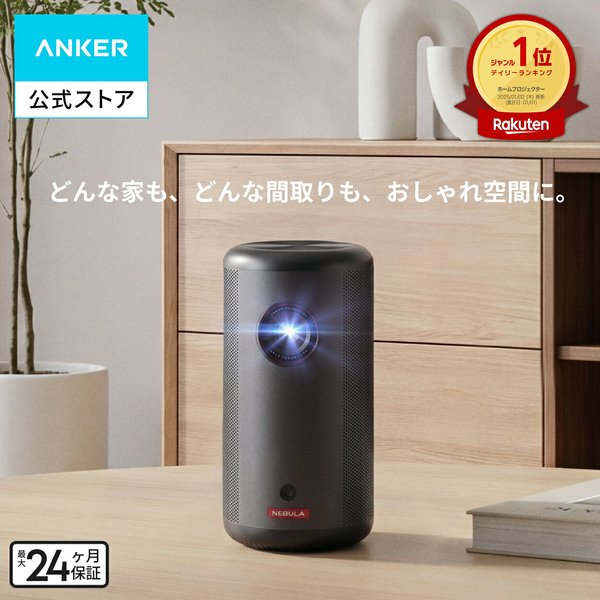
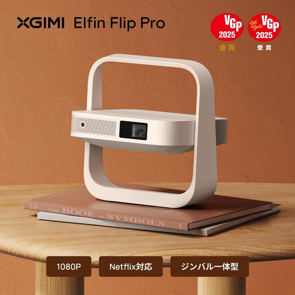
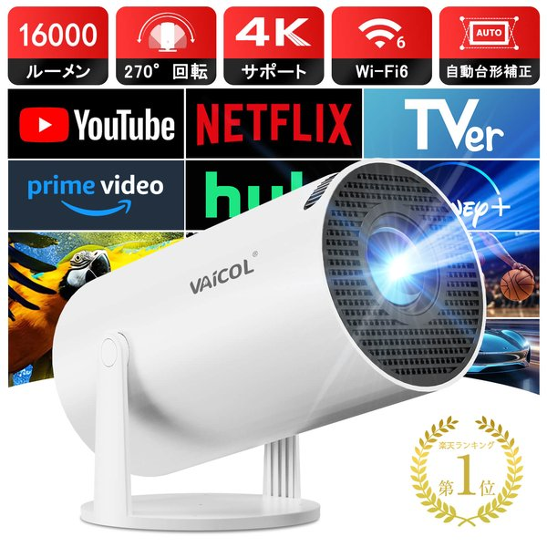
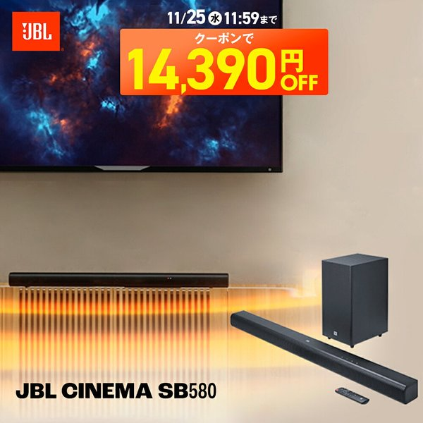
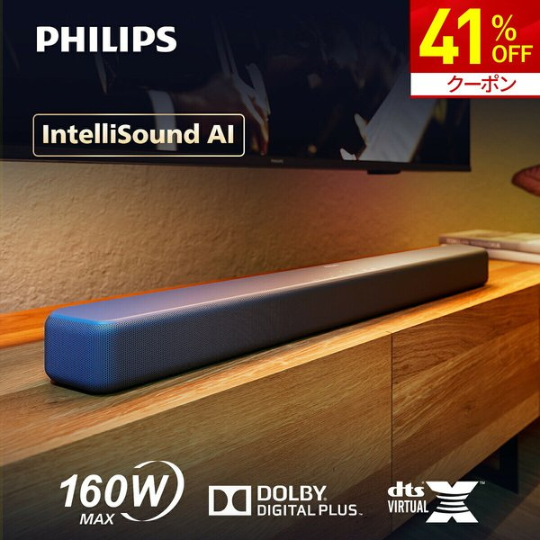
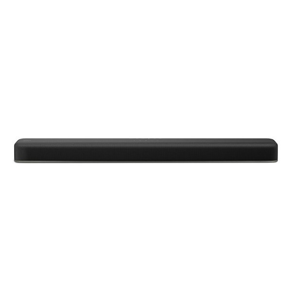
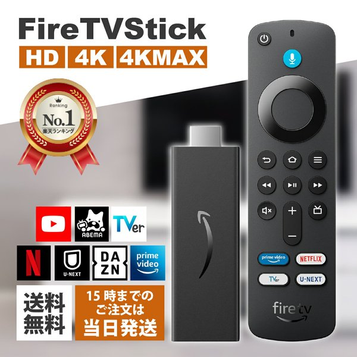
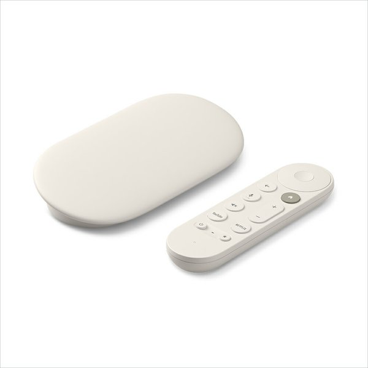
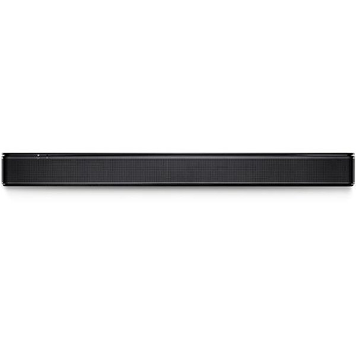

【2026年冬】映画もスポーツ観戦も大画面で！ホームプロジェクター・サウンドバー・Fire TVでつくる自宅シアター10選
冬は外に出る回数が減り、家で映画やスポーツを見る時間が増えます。テレビの音と画面に少し足すだけで、同じ作品が別物に見えるのが、プロジェクターとサウンドバーです。
選ぶ軸はどこに映すか、音をどこまで足すか、そして配信をどう見るかの3つ。壁に映すなら小型プロジェクター、天井に映すならスタンド一体型、明るさを優先するなら300〜400ルーメン台のモデルが向いています。音はテレビのスピーカーに不満があるならサウンドバー、低音を足したいならサブウーファー付き。配信はFire TVやGoogle TVの端末を1台足すだけで、古いテレビでも最新の作品が見られます。プロジェクターは明るさの数値と設置距離で映る大きさが変わるので、部屋の寸法を先に測っておくと失敗しません。
本記事では、楽天市場で人気・高評価のおうちシアター10選を、実売価格とレビュー評価つきで写真付き紹介します。
- おすすめ10選 スペック・特徴比較表
- BEST 1｜カベーニ モバイルプロジェクター 小型・天井投影（ホームシアター）
- BEST 2｜Anker Nebula Capsule 3 モバイルプロジェクター（Google TV搭載・1080P）
- BEST 3｜XGIMI Elfin Flip Pro プロジェクター（1080P・400ISOルーメン・ジンバル一体）
- BEST 4｜WISCOL プロジェクター 家庭用 16000LM（Android TV搭載・270°回転）
- BEST 5｜JBL サウンドバー Cinema SB580（Dolby Atmos・3.1ch）
- BEST 6｜フィリップス サウンドバー 160W（テレビ・PC対応・Bluetooth）
- BEST 7｜ソニー サウンドバー HT-X8500（Dolby Atmos・2.1ch）
- BEST 8｜Amazon Fire TV Stick 4K Max（Alexa音声リモコン付き）
- BEST 9｜Google TV Streamer (4K) ストリーミング端末
- BEST 10｜Bose TV Speaker コンパクトサウンドバー（Bluetooth対応）
- 【読者負担0円】買わなくても得する無料サービス
- まとめ：おうちシアター10選の選び方
| 順位 | 商品名 | ブランド | 最大の特徴・おすすめ理由 | 総合評価 |
|---|---|---|---|---|
| BEST 1 | カベーニ モバイルプロジェクター 小型・天井投影（ホームシアター） | カベーニ（CABENY） | レビュー8,359件・評価4.59の人気モデル | 4.59 |
| BEST 2 | Anker Nebula Capsule 3 モバイルプロジェクター（Google TV搭載・1080P） | Anker（Nebula） | Google TV内蔵でリモコン1つで完結 | 4.65 |
| BEST 3 | XGIMI Elfin Flip Pro プロジェクター（1080P・400ISOルーメン・ジンバル一体） | XGIMI | ジンバル一体で設置が簡単 | 4.73 |
| BEST 4 | WISCOL プロジェクター 家庭用 16000LM（Android TV搭載・270°回転） | WISCOL | 1万円を切る価格 | 4.55 |
| BEST 5 | JBL サウンドバー Cinema SB580（Dolby Atmos・3.1ch） | JBL | Dolby Atmos対応の3.1ch | 4.39 |
| BEST 6 | フィリップス サウンドバー 160W（テレビ・PC対応・Bluetooth） | フィリップス（PHILIPS） | 160W出力でテレビの音がはっきりする | 4.46 |
| BEST 7 | ソニー サウンドバー HT-X8500（Dolby Atmos・2.1ch） | ソニー（SONY） | Dolby Atmos・DTS:X対応 | 4.57 |
| BEST 8 | Amazon Fire TV Stick 4K Max（Alexa音声リモコン付き） | Amazon（Fire TV） | 挿すだけで動画配信が使える | 4.68 |
| BEST 9 | Google TV Streamer (4K) ストリーミング端末 | Google TVの操作性が快適 | 4.29 | |
| BEST 10 | Bose TV Speaker コンパクトサウンドバー（Bluetooth対応） | Bose（ボーズ） | 幅59cmのコンパクトサイズ | 4.47 |
カベーニ モバイルプロジェクター 小型・天井投影（ホームシアター）
手のひらに収まるモバイルプロジェクター。天井に映せるので、布団に寝たまま映画を観られます。バッテリー内蔵で、寝室からリビングまで持ち運べます。レビュー8,359件・評価4.59と、プロジェクターでは飛び抜けて口コミが多い人気モデル。価格は3万9千円台で、初めての1台として失敗しにくいです。楽天市場での実売価格は約39,800円（2026年11月時点）。
- レビュー8,359件・評価4.59の人気モデル
- 天井投影で寝ながら観られる
- バッテリー内蔵で持ち運べる
- 明るい部屋では白っぽくなるので、遮光カーテンと合わせる
Anker Nebula Capsule 3 モバイルプロジェクター（Google TV搭載・1080P）

500ml缶ほどの円筒形のモバイルプロジェクター。Google TVを内蔵しているので、NetflixやYouTubeを本体だけで再生できます。200ANSIルーメンと明るさは控えめですが、暗い部屋なら100インチ前後まで映せます。レビュー350件・評価4.65。置き場所を取らず、配線も最小限で済むのが利点です。楽天市場での実売価格は約89,990円（2026年11月時点）。
- Google TV内蔵でリモコン1つで完結
- 缶サイズで置き場所を取らない
- 評価4.65・レビュー350件
- 明るさ200ANSIルーメンなので、昼間の視聴には不向き
XGIMI Elfin Flip Pro プロジェクター（1080P・400ISOルーメン・ジンバル一体）

スタンドと本体が一体になったプロジェクター。台を置いて角度を変えるだけで、壁や天井に向きを合わせられます。400ISOルーメンと、小型機の中では明るめ。Netflixにも対応し、電源を入れてから映るまでの手順が短いです。レビュー220件・評価4.73と満足度が高く、リビングの一角に置きっぱなしにできます。楽天市場での実売価格は約69,800円（2026年11月時点）。
- ジンバル一体で設置が簡単
- 400ISOルーメンで小型機では明るい
- 評価4.73・レビュー220件
- 価格は7万円前後で、入門機より高い
WISCOL プロジェクター 家庭用 16000LM（Android TV搭載・270°回転）

1万円を切る価格の家庭用プロジェクター。Android TVを搭載し、本体にアプリを入れて直接動画を再生できます。270°回転するレンズで、壁にも天井にも向きを変えられます。レビュー2,451件・評価4.55と、価格帯では口コミが多く集まっています。まず大画面を試してみたい人の最初の1台に向いています。楽天市場での実売価格は約9,960円（2026年11月時点）。
- 1万円を切る価格
- レビュー2,451件・評価4.55
- Android TV搭載で単体再生できる
- 価格なりの画質なので、暗い部屋で使う前提
JBL サウンドバー Cinema SB580（Dolby Atmos・3.1ch）

Dolby Atmosに対応した3.1chのサウンドバー。左右に広がる音と、サブウーファーなしでも出る低音で、映画のセリフが聞き取りやすくなります。テレビの前に置くだけで、配線はHDMI1本。レビュー211件・評価4.39。スポーツ観戦の歓声や映画の音楽を、テレビのスピーカーより一段上の音で楽しみたい人に向いています。楽天市場での実売価格は約43,890円（2026年11月時点）。
- Dolby Atmos対応の3.1ch
- HDMI1本でつながる
- 評価4.39・レビュー211件
- 横幅があるので、テレビボードの幅を確認する
フィリップス サウンドバー 160W（テレビ・PC対応・Bluetooth）

160W出力のサウンドバーで、Dolby Digital Plusに対応。テレビの下に置ける薄型で、Bluetoothでスマホの音楽も再生できます。光デジタル・同軸・AUXと入力が多く、古いテレビにもつなげます。レビュー178件・評価4.46。価格は3万円台で、テレビの音を手軽に底上げしたい家に向いています。楽天市場での実売価格は約31,800円（2026年11月時点）。
- 160W出力でテレビの音がはっきりする
- 入力端子が多く古いテレビにも接続できる
- 評価4.46・レビュー178件
- サブウーファーは別売りなので、重低音は控えめ
ソニー サウンドバー HT-X8500（Dolby Atmos・2.1ch）

ソニーの2.1chサウンドバーで、Dolby AtmosとDTS:Xに対応。バーチャルサラウンドで、左右だけでなく後方から回り込む音も再現します。高さ約6.4cmと薄く、テレビの前でも画面を遮りません。レビューは21件と少なめですが、評価は4.57。テレビと同じメーカーで揃えたい人に選ばれています。楽天市場での実売価格は約43,254円（2026年11月時点）。
- Dolby Atmos・DTS:X対応
- 高さ6.4cmの薄型
- 評価4.57
- レビューは21件と少なく、口コミはこれから増える段階
Amazon Fire TV Stick 4K Max（Alexa音声リモコン付き）

テレビのHDMI端子に挿すだけで、Netflix・YouTube・Prime Videoなどの動画配信が使えるスティック型端末。4K対応でWi-Fi 6にも対応し、読み込みが速いです。音声リモコンで作品名を話すだけで検索できます。レビュー2,005件・評価4.68。古いテレビをスマートテレビ化する、いちばん安い方法のひとつです。楽天市場での実売価格は約5,600円（2026年11月時点）。
- 挿すだけで動画配信が使える
- 4K・Wi-Fi 6対応
- レビュー2,005件・評価4.68
- 4K視聴には4K対応テレビとHDMI端子が必要
Google TV Streamer (4K) ストリーミング端末

テレビにつなぐGoogle TVの端末。Fire TV Stickより本体が大きく、置き型でリモコンとの反応が安定しています。Googleフォトの写真をテレビに映すスクリーンセーバーや、スマートホームの操作もできます。レビューは14件と少なく、評価は4.29。Fire TVと使い分けたい人、Googleのサービスをよく使う人に向いています。楽天市場での実売価格は約24,500円（2026年11月時点）。
- Google TVの操作性が快適
- 置き型でリモコンの反応が安定
- スマートホームの操作もできる
- レビューは14件と少なく、価格は2万4千円台
Bose TV Speaker コンパクトサウンドバー（Bluetooth対応）

ボーズの小型サウンドバー。幅約59cmと短く、小さめのテレビ台にも置けます。セリフを聞き取りやすくするモードがあり、映画やドラマの会話がはっきり聞こえます。Bluetoothでスマホの音楽も再生できます。レビュー128件・評価4.47。テレビの音に不満があるけど、大きな機材は置きたくない家に向いています。楽天市場での実売価格は約26,800円（2026年11月時点）。
- 幅59cmのコンパクトサイズ
- セリフが聞き取りやすいモード付き
- 評価4.47・レビュー128件
- 低音はサブウーファーに劣るので、迫力重視なら物足りない
この記事の商品を買う前に、まずは無料で得する選択肢をチェック。どれも登録・利用は0円で、無料期間中に解約すれば料金はかかりません。読みたい雑誌がある人、ポイントを貯めたい人、アンケートなら気軽という人、それぞれに合うものを選べます。
初回31日無料・無料期間中に解約すれば0円 → 楽天ポイントモール｜登録無料で毎日ポイ活
買い物なしでもポイントが貯まる無料サービス → 楽天インサイト｜アンケートに答えてポイント
登録無料・すきま時間のアンケートで貯まる → 楽天カード｜年会費永年無料
新規発行・年会費ずっと0円 →
4つのサービスの違いと使い分けは「出費0円で得する！買わずにポイントが貯まる無料サービス厳選4選」でまとめています。
💡 まとめ：おうちシアター10選の選び方
自宅シアターは、画面・音・配信の3つを順番に足すと失敗しません。まずFire TVなどの端末で見られる作品を増やし、次にサウンドバーで音を変え、最後にプロジェクターで画面を大きくする。この順番なら、予算が限られていても効果を感じやすいです。プロジェクターは明るさ（ルーメン）と設置距離を確認し、暗い部屋で使う前提で選ぶと画質の不満が出にくくなります。サウンドバーはテレビの幅とHDMI端子の数を見てから決めると、届いてから置けないということがありません。冬のあいだに1つずつ足していくと、同じ部屋の見え方が変わります。
楽天市場では「5と0のつく日」や「お買い物マラソン」などのキャンペーンに合わせて購入すると、ポイント還元が最大化してお得に手に入ります。ぜひチェックしてみてくださいね。